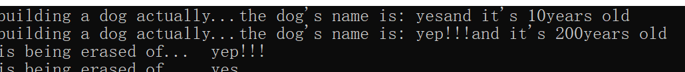
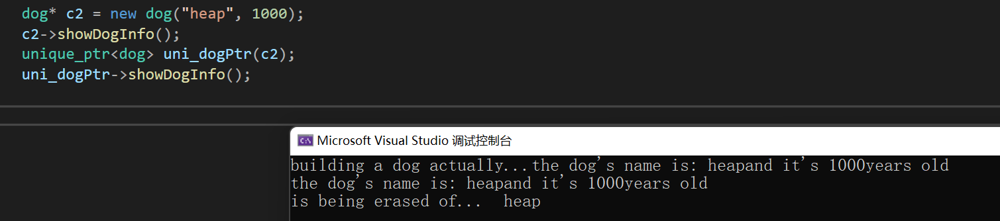
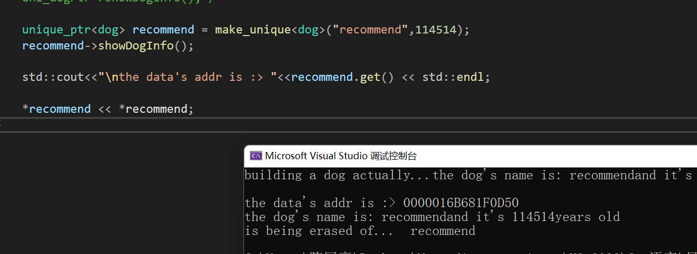
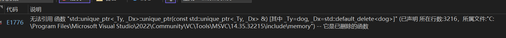
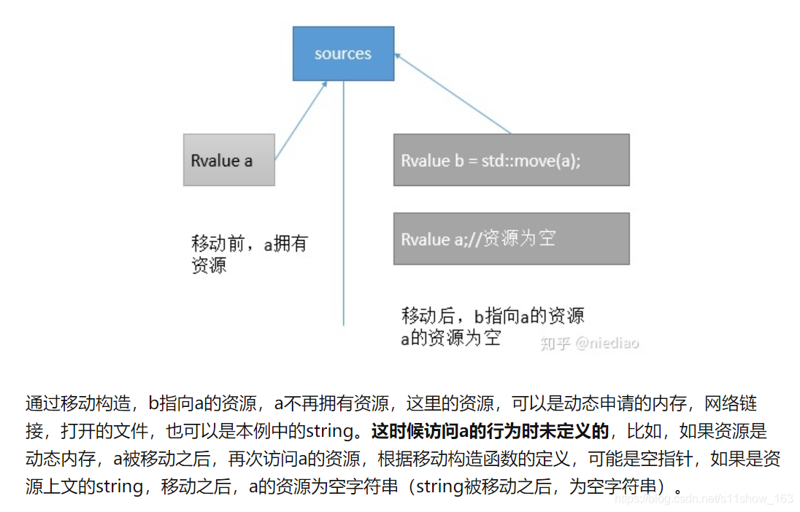
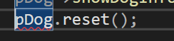

Modern_C++_SmartPtr(1)_UniquePtr
C++ 智能指针
突发奇想，准备来点CPP狠活（）
CPP智能指针类型
· 就三个：
std::unique_ptr
std::shared_ptr
std::weak_ptr
std::auto_ptr 已经被废弃！ 下面就开始一些简单的讲述
概论
在CPP智能指针诞生之后，CPP的指针就包括两类了： raw pointer裸指针和智能指针 smart_pointer。我们的cpp对指针进行了封装，优点就是可以自动分配内存，不需要你来干，不需要你来释放。
不过，需要知道的是：更多的时候裸指针会更加的方便而不是智能指针！在使用频率上，还是：原始指针 > unique_ptr = shared_ptr > weak_ptr的
对了，事实上我们的智能指针并没有完全解决内存安全！这是我们需要注意的。智能指针解决了所有权指针的释放和传输！因此，不是在开发中无脑的使用智能指针就完事了！否则还会造成内存安全隐患。
unique_ptr
人话：在任何给定时刻只有一个指针管理这片内存！并且，当这个指针出了作用域之后自动释放内存。BTW，因为只能一个指针管，因此不能复制，智能移动。
我们有三种创建方式。
1）现有的裸指针来创建（建议设置为空nullptr）
2）new一个
3）std::make_unique整一个（推介）
by the way我们使用get（）方法来获取地址
其余的->和 . 都跟裸指针都是一样的，下面来看下demo
// create a file of dog class::
.h:>
#pragma once
#include<string>
#include<iostream>
class dog
{
public:
dog(std::string name, unsigned int age);
dog() = default; // using in C++11, to avoid being mistaken while you just simply write "dog a"
~dog();
void showDogInfo() const {
std::cout << "the dog's name is: " << name << "and it's " << age << "years old" << '\n';
}
void setInfo(const std::string name,const unsigned int age)
{
this->name = name;
this->age = age;
return;
}
std::string getInfoofName() {
return this->name;
}
unsigned int getAge() {
return this->age;
}
private:
std::string name;
unsigned int age;
};
.cpp:>
#include "dog.h"
dog::dog(std::string name, unsigned int age)
{
std::cout << "building a dog actually...";
this->name = name;
this->age = age;
return;
}
dog::~dog() {
std::cout << "is being erased of... " <<this->name<< '\n';
}
:> in main.cpp
#include<iostream>
#include<memory>
#include"dog.h"
using namespace std;
int main()
{
// creating in stack
dog c1("yes", 10);
c1.showDogInfo();
{
// using in limited area
dog c1("yep!!!", 200);
c1.showDogInfo();
}
}
那在裸指针的接收吧！
出问题了，他没有调用析构，意味着内存泄漏
在CPP11之前，我们需要手动的delete！
但是就算如此还是会出现这样的问题！
dog* c2 = new dog("heap", 1000);
c2->showDogInfo();
{
c2 = new dog("heap", 1000);
c2->showDogInfo();
}
delete c2;
// FATAL ERROR!!! 我们发现指针的转移造成了一个内存不被指针记住！
那这样呢？
dog* c2 = new dog("heap", 1000);
c2->showDogInfo();
{
c2 = new dog("heap", 1000);
c2->showDogInfo();
delete c2;
}
delete c2;
// SO how??? 还是错的！从这个变量已被改变开始，就找不回去了！所有，这个代码会崩溃。因此我们在这样的复杂场合下不应该使用裸指针。
demo of 智能指针创建

你看，现在我们使用智能指针。没有调用delete还是成功的删除了dog在堆上的内存
但是还有一个大问题：我们就这样跑路了对不对？不对，没有对原始的空指针进行销毁：
// Correct one:...
dog* c2 = new dog("heap", 1000);
c2->showDogInfo();
unique_ptr<dog> uni_dogPtr(c2);
c2 = nullptr;
uni_dogPtr->showDogInfo(); 我觉得不如这样写更加好：
unique_ptr<dog> uni_dogPtr(new dog("smart",1000));
uni_dogPtr->showDogInfo(); 但官方推介的是这个：
unique_ptr<dog> recommend = make_unique<dog>("recommend",114514); recommend->showDogInfo(); 显然这个更简洁。
下面是get()方法的应用：
std::cout<<"\nthe data's addr is :> "<<recommend.get() << std::endl; 也有可以对这个智能指针直接解引用的方式来处理问题：当然要预先定义解引用后怎么处置对象的问题。

unique_ptr和函数调用
注意！这个玩意不可以copy，而且在做函数参数或者是的时候一定要留心所有权的问题！
1）值传递
需要使用std::move来转移内存的拥有权
若参数直接传入到std::make_unique语句，那就自动转化成move!
2）引用传递
若设置了const就不能改变指针的指向！这是需要我们注意的！
3）返回值
指向一个local object
当然用于链式函数！
下面来看一个Demo, 现在我们来看一下，我们现在设计一个如下的函数！
void do_WithDog(std::unique_ptr<dog> pDog){
pDog->showInfo();
} 但是很快，我们试图去传送的时候也，给你爆一个匪夷所思的错误：

这个时候，其实就是ptr的权限不够，现在我们来用std::move来解决问题
void do_WithDog(std::move(pDog)) 此后留意到，不可以再次使用这个指针来访问，因为以及被移动了！

（本质上讨论！就是把左值变为右值）
能不能简单点？可以，但是注意到，这里发生了隐式类型转换！
void do_WithDog(std::make_unique<dog>()); 2)引用传递
现在我们重新设计一下！
void doWithRefDof(std::unique_ptr<dog>& pDog) {
pDog->setInfo("111", 100);
pDog->showDogInfo();
pDog.reset();// 把pDog的指向转向0
}
doWithRefDof(recommend);
于是后面再次使用recommend的时候会发现代码会在运行的时候崩溃，因为
recommend.get() --> 0 这是需要注意的！那这样呢？
void doWithRefDof(const std::unique_ptr<dog>& pDog) {
pDog->setInfo("111", 100);
pDog->showDogInfo();
pDog.reset();// 把pDog的指向转向0
}
doWithRefDof(recommend); 然后发现爆了新错，不是因为setInfo不能使用，而是Reset 出了问题

就像常指针一样了！
下面，我们来设计一个返回unique_ptr 的函数 ，他正是：
std::unique_ptr<dog> getUniDogPtr(const std::string name,const unsigned int age){
std::unique_ptr<dog> p_Dog = std::make_unique<dog>(name,age);
return p_Dog;
} 或者再简洁一点！
std::unique_ptr<dog> getUniqueDogPtr(const std::string name,const unsigned int age) {
return std::make_unique<dog>(name, age);
}